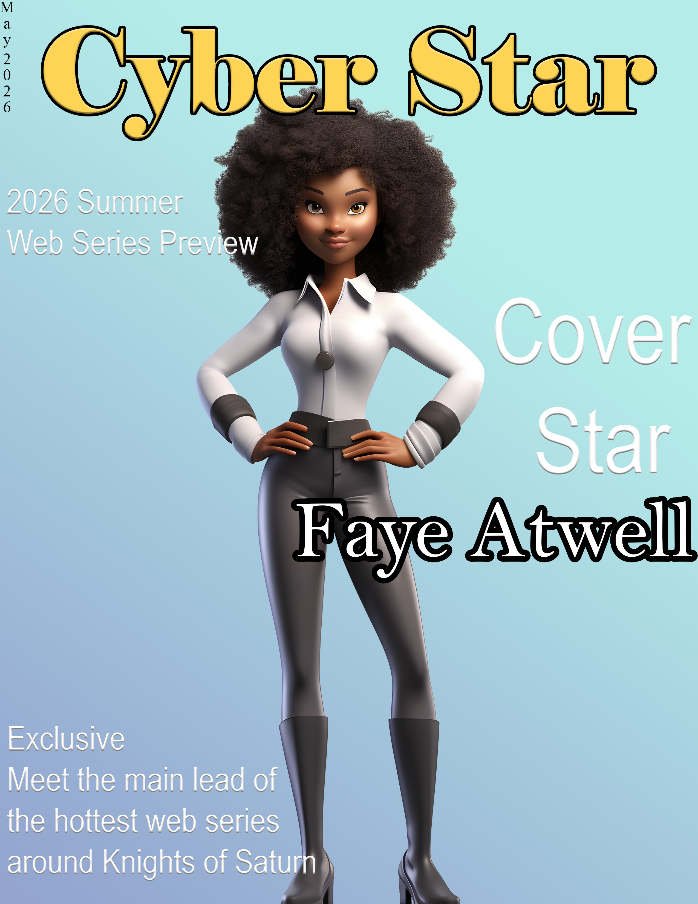

This is a cover design for the Cyber Star Digital Magazine.
Purpose of the Project: This project aims to design a digital magazine cover for Cyber Star magazine featuring Faye Atwell, one of the main lead characters from the highly popular animated web series Knights of Saturn. The objective is to increase digital sales and expand market reach.
Explanation of Tools and Skills: Move Tool: I used this tool to move different elements or aspects around on the canvas. For example, the Faye Atwell character artwork and the magazine’s text. Gradient Tool: I used this tool to give the background a smooth blend of multiple colors that would allow for the Faye Atwell artwork to pop out and to avoid the background color of the magazine cover coming across as flat or dull. Horizontal Type Tool: I used this tool for all the horizontal text utilized on the magazine cover. I also used special effects to make the text pop and to give it more personality. Vertical Type Tool: I used this tool for the vertical text utilized on the magazine cover.